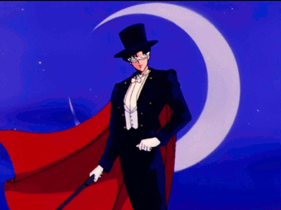
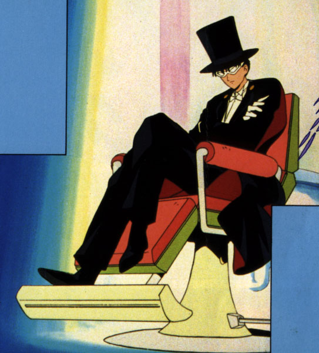
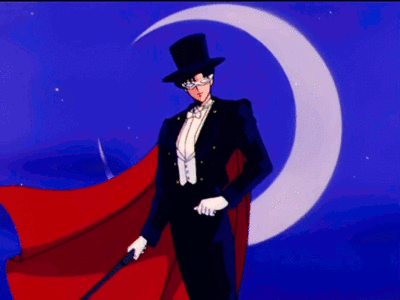
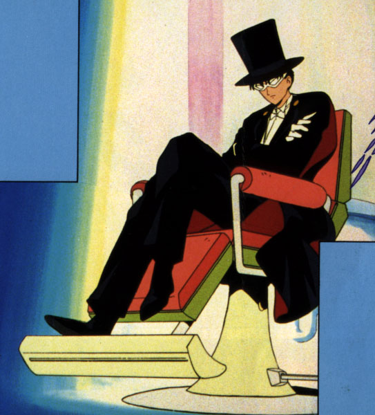

Tuxedo Mask
.jfif) 



Tuxedo Mask
Usagi is first introduced as living the life of a normal teenage schoolgirl in 20th-century Tokyo. Although well-meaning, she is an underachieving, accident-prone crybaby. One day, Usagi encounters a mysterious cat with a crescent moon on its forehead, who later reveals herself to be Luna, a mentor archetype who introduces Usagi to her new heroic role. Luna gives Usagi a magical brooch and explains how to use it to transform into Sailor Moon (the Guardian of Love and Justice); she tells Usagi that she is a Sailor Guardian who must fight for peace and find the rest of the Sailor Guardians, as well as their princess. Usagi is a reluctant heroine at first,[6][7] she grows more confident and mature over time. As Sailor Moon, she sets out to fight the villains from her past life and to protect the Earth using the legendary Silver Crystal.
Tuxedo mask
As Tuxedo Mask, Mamoru wears a formal black tuxedo suit with a black cape and a red interior. He wears a white mask and a formal long hat. He also wields a black cane and the red rose that he throws on his enemies. In Episode 81 at the finale of Sailor Moon R where he shields Sailor Moon from Black Lady's attack, both his hat and his mask were knocked off to show his true identity.